超智能体读书笔记1
在此感谢yjango大神，在学习神经网络的路上有大神深入浅出的指引使自己少走了很多弯路，以下是此书地址： https://yjango.gitbooks.io/superorganism/content/
该书最终的目的是：通过理解智能，学习如何学习。
如何机器学习
如何大脑学习
以下是学习过程中感觉重要的笔记，在此记录下来，如有侵权，请随时联系我删除。
 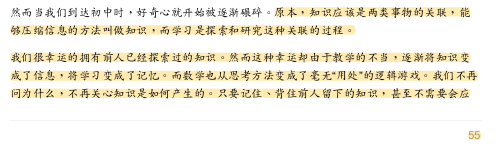
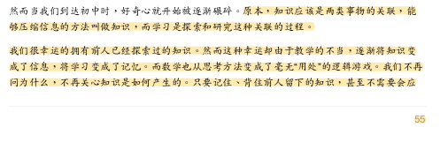
 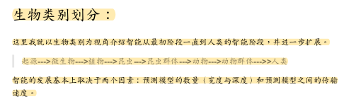
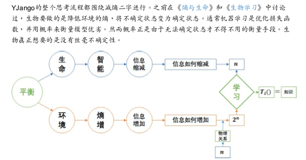
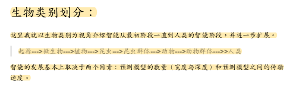
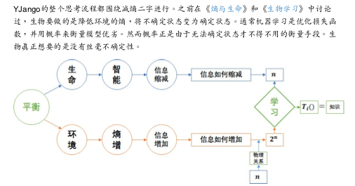
 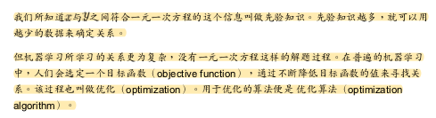
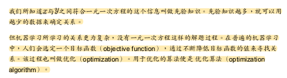


 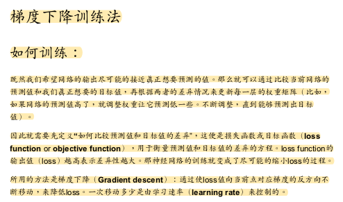
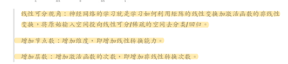
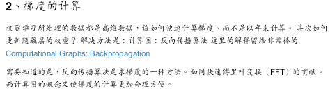
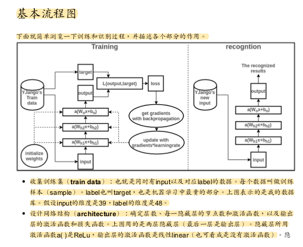
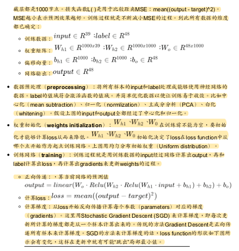
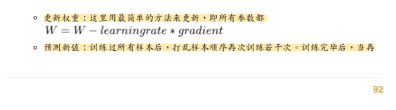
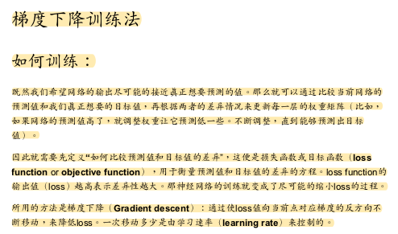
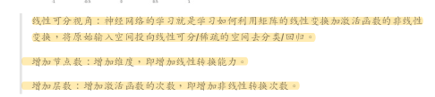
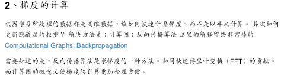
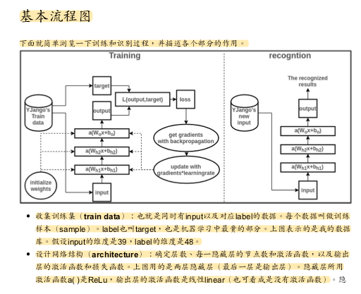
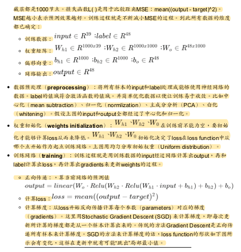
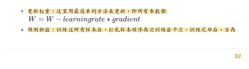


在此感谢yjango大神，在学习神经网络的路上有大神深入浅出的指引使自己少走了很多弯路，以下是此书地址： https://yjango.gitbooks.io/superorganism/content/
该书最终的目的是：通过理解智能，学习如何学习。
如何机器学习
如何大脑学习
以下是学习过程中感觉重要的笔记，在此记录下来，如有侵权，请随时联系我删除。
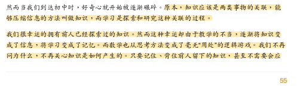
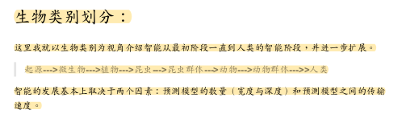
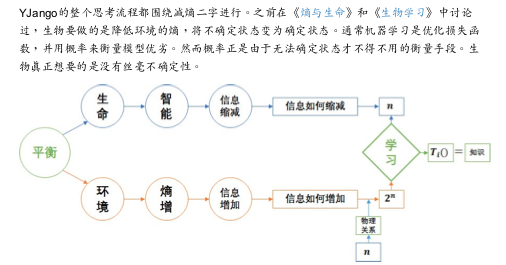
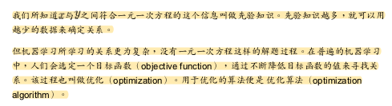
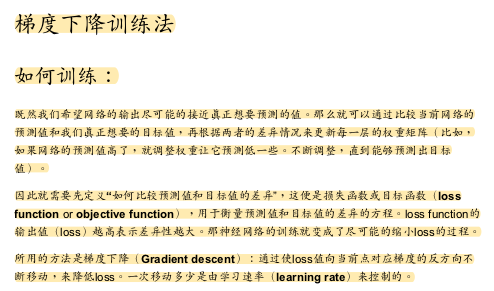
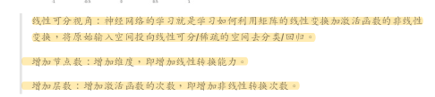
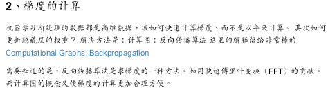
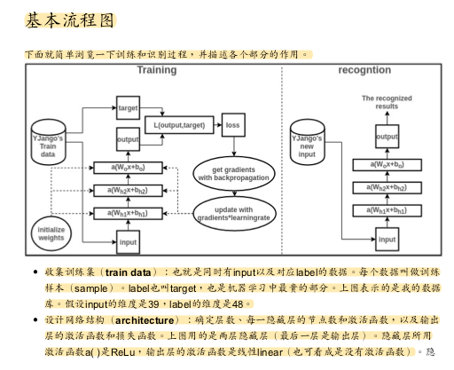
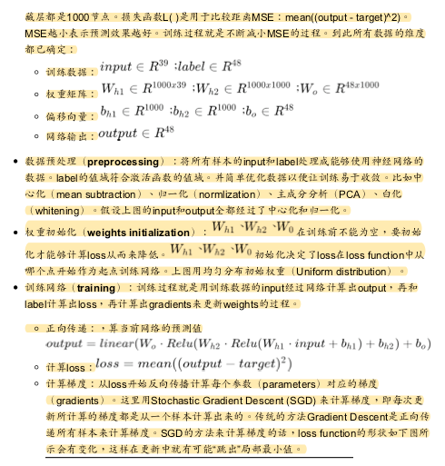
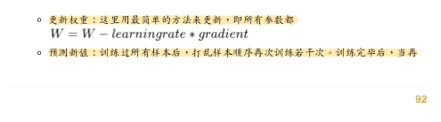
大学的数学忘的差不多了，今天跟着大师又复习了一下，课程地址 https://www.coursera.org/learn/machine-learning/lecture/38jIT/matrices…
今天学python，遇到了协程，这个之前写java没怎么用过，今天查了下记录下来，反复理解。 协程其实就是函数调用,相比线程更为轻量级，代码示例如下： def 协程1(): pass def 协程2(…